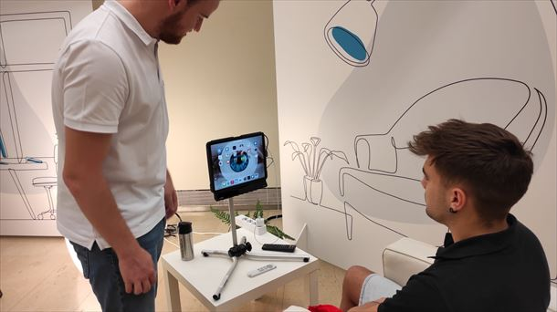

¿Se puede manejar un ordenador o tablet con la mirada?

idea principal: Periodistas se han comunicado con la empresa Irisbond que ha logrado crear el prototipo de un computador que se puede manejar con la mirada, sin siqueira mover un solo dedo tambien han desarrollado el programa para un ascensor asi no tener que oprimir algun boton a la hora de desplazarnos entre pisos.resumen: Hoy en "Boulevard" nos hemos acercado a una empresa donostiarra que permite elegir el café de una máquina sólo con la mirada, sin tener que dar a ningún botón o incluso decirle al ascensor, también con la mirada, a qué piso queremos ir.
Eso es posible gracias a una empresa donostiarra Irisbond. El responsable técnivo de la empresa Óscar Berretaga lo explicaba así: "Es un seguidor de la mirada, se trata de traducir la forma en la que miramos a unas coordenadas que permiten gobernar el cursor que tenemos en un pantalla para poder manejar las diferentes aplicaciones".
Ayuda a las personas que tienen cualquier dificultad con el habla a comunicarse y, a personas con movilidad limitada a interactuar con dispositivos. Esto es lo que se llama Comunicación Aumentativa y Alternativa (CAA) y utilizan los comunicadores dinámicos para hacer realidad esa comunicación en personas con el habla afectada.
Y también es una herramienta eficaz en muchas áreas del mundo sanitario, desde prevención al evitar tocar superficies que pueden favorecer el contagio hasta diagnóstico de enfermedades cognitivas..bibliografia: https://www.eitb.eus/es/radio/radio-euskadi/programas/boulevard/detalle/9001954/se-puede-manejar-ordenador-o-tablet-con-mirada/
Nombre: Thomas Alejandro Vargas Blanco
Curso: 11°